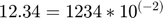
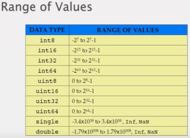
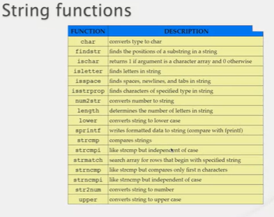
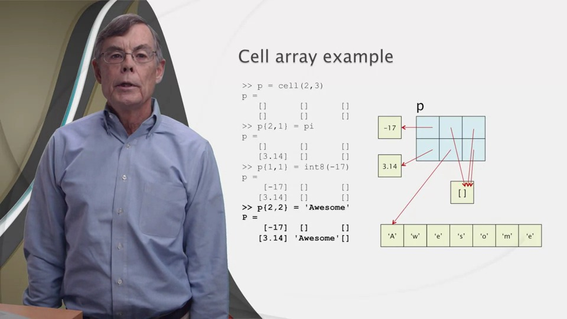
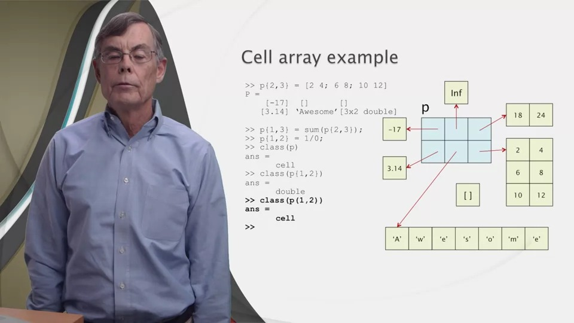
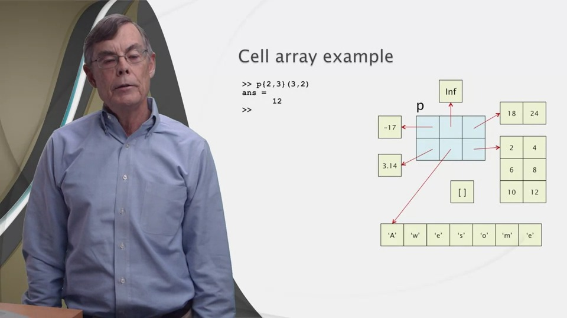
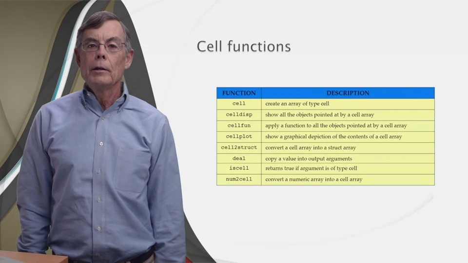

Introduction to Data Types
Contents
The Limitation of Computers
> Real numbers in mathematics:
- Can be infinitely large
- Have infinitely fine resolution
> Computers: Finite Memory
- Upper limit on the largest number that can be represented
- Lower limit on the absolute value of any non-zero number
> The set of values that can be represented by a MATLAB variable is finite
Data Types
> MATLAB: many different data types
> A data type is defined by:
- Set of values
- Set of operations that can be performed on those values
> MATLAB:
- All elements of a given array must be of the same type
- Elementary type
> Type of a MATLAB array is defined by
- Number of dimensions
- Size in each dimension
- Elementary Type
Numerical Types
double
- Default type in MATLAB
- Floating point representation
Example: 
Mantissa and exponent
- 64 bits (8 bytes)
single
- 32-bit floating point
Integer Types
- Signed, unsigned
- 8-, 16-, 32-, 64-bit long

Useful functions
> Type check:
class(x) isa(x)
> Range check:
intmax, intmin realmax, realmin
> Conversion:
Name of function = name of desired data type int8(x), uint32(x), double(x), etc.
Operators
> Arithmetic operators
- Operands of the same data type: No problem
- Different data Types:
*"mixed-mode arithmetic" *Many rules and restrictions
> Relational operators
- Different data types are always allowed
- Result is always logical type
Strings
Text: string
Argument to fprintf and other funcions
String: vector of char-s
Numerical Type
- Uses an encoding scheme
- Each character is represented by a number
- ASCII scheme
American Standard Code for Information Interchange Developed in 1960's 7 bits, 128 characters Latin Alphabet Punctuation Special Characters Newer schemes with far more characters ASCII is a subset of them
Exercise Print out the visible characters of the ASCII table:
function char_codes for ii = 33:126 fprintf('%s', ii); end fprintf('%s',10); % same as fprintf('\n'); 10: value for next line end
EXAMPLE!!!
message = 'Let''s skip class today!' code = double(message) secret = char(code + 3) char(secret-3)
In command Window: message = 'Let's skip class today!'
code =
Columns 1 through 11
76 101 116 39 115 32 115 107 105 112 32
Columns 12 through 22
99 108 97 115 115 32 116 111 100 97 121
Column 23
33secret = 'Ohw*v#vnls#fodvv#wrgd|$'
ans = 'Let's skip class today!'
The sprintf needs an output argument to print/display the string on the command window unlike the fprintf function.
>> fprintf('The area of a circle with radius %.2f is %.2f!\n', r,pi*r^2);
The area of a circle with radius 12.00 is 452.39!
>> sprintf('The area of a circle with radius %.2f is %.2f!\n', r,pi*r^2);
>>If you want to change your string to a lower/uppercase ones, use lower,upper
For more string functions look at:

Structs (vs Arrays)
An array must be homogenous:
- It cannot contain elements of multiple types.
A struct can be heterogenous:
- It can contain multiple types.
A struct is different from an array: * fields, nt elements * field names, not indices * Fields in the same struct can have different tyes
Versality inside:
- A field of a struct can contain another struct
- Structs can hold arrays, and arrays can hold structs
% Syntax % % >> r.ssn = 12345678 % r = % ssn: 12345678 % >> class(r) % ans = % struct % >> class(r.ssn) % ans = % 'double' % >> r.name = 'Homer Simpson' % r = % struct with fields: % % ssn: 12345678 % name: 'Homer Simpson' % >> r.address.street = 'Cauayan City, Isabela' % r = % struct with fields: % % ssn: 12345678 % name: 'Homer Simpson' % address: [1×1 struct] % % Struct functions % % <<3.jpg>> %
Exampleeee
>> account.number = 1234567
account =
number: 1234567
>> account.balance = 5000
account =
struct with fields:
number: 1234567
balance: 5000
>> account.owner.name = 'Joe Smith'
account =
struct with fields:
number: 1234567
balance: 5000
owner: [1×1 struct]
>> account.owner.email = 'joe@matlabmoc.com'
account =
number: 1234567
balance: 5000
owner: [1×1 struct]
>> class(account)
ans =
'struct'
>> class(account.number)
ans =
'double'
>> class(account.balance)
ans =
'double'
>> account.owner
ans =
struct with fields: name: 'Joe Smith'
email: 'joe@matlabmoc.com'If we want another account(field) but in the same struct:
>> account(2).number = 7654321
account =
1×2 struct array with fields:
number
balance
owner
>> account(2).balance = 1000
account =
number
balance
owner
>> account(2).owner.name = 'Jane Farmer'
account =
number
balance
owner >> account(1:2).owner
ans =
name: 'Joe Smith'
email: 'joe@matlabmoc.com'
age: 23
ans =
name: 'Jane Farmer'rmfield to remove a field needs an uotput argument to update kasi if rmfield lang ginawa mo without output argument, ipapakita niya lang sa'yo yung struct without that field pero hindi niya iuupdate ang mismong struct
>> rmfield(account(1).owner, 'age')
ans =
name: 'Joe Smith'
email: 'joe@matlabmoc.com'
>> account(1).owner
ans =
name: 'Joe Smith'
email: 'joe@matlabmoc.com'
age: 23Now let's check!
>> account(1).owner = rmfield(account(1).owner,'age')
>> account(1).owner
ans =
name: 'Joe Smith'
email: 'joe@matlabmoc.com'Pwede rin tayong gumawa ng struct in an array way! >> course = struct('Area', 'CS', 'number', 103,'title','Introductory Programming for Engineers and Scientists') course = Area: 'CS' number: 103 title: 'Introductory Programming for Engineers and Scientists'
Cells [Parang dictionary sa Python]
How to store a page text?
- Each line should be a separate string
- Cannot use an array of chars: Each line would have to have the same length
- A vector of objects with each referring to one line
Pointer
* Each variable (scalar, vector, array, etc.) is stored in the computer memory * Each memory locaion has a unique adress * A pointer is a variable that stores an adress * MATLAB calls a pointer a * _"cell"_ *
Cells
> MATLAB has a restrictive pointer model
- Strict rules on what can be done with cells
- Harder to make mistakes
> But it is a powerful ways to store heterogenous data
- Cell arrays
- Used more frequently than structs
> New syntax:
- To access the data a cell points to, use {}
Example : cells_of_text.m (Lesson_7_Examples folder)


We can also index arrays in a cell by:

>> c{1} = pi
>> c{2} = 'Cell or not cell?'
c =
*1×2 cell array*
{[3.1416]} {'Cell or not cell?'}c{2} : gives the string mismo vs c(2) : gives back an array
>> c{2}
ans =
'Cell or not cell?' % String
>> c(2)
ans =
1×1 cell array
{'Cell or not cell?'} % ARRAY ang binigay
>> c(1)
ans =
1×1 cell array
{[3.1416]}Cell functions
